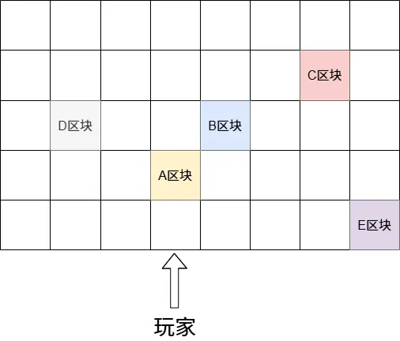

在异步NC更新导致的漏洞中，有一个很重要要实现的东西是让一一个区块在被别的区块锁住进行数据替换时完成加载。本篇文章以如何实现这个为例子分析如何操控区块加载顺序
假设有AB区块，A区块是要完成加载的区块，B区块是要进行数据替换的区块
首先我们控制变量，将AB区块周围很大范围内的区块都更改一遍，让数据库记录它们。
然后假设视距是5，模拟距离是4。这时距离玩家10区块的区块会被创建，距离玩家9区块的区块由于周围区块都记录在数据库了，所以会直接卡在数据替换阶段前（因为距离10区块的区块还没到和它一样的阶段），距玩家8区块的区块会卡在光照初始化前，而距玩家7区块的区块会完成加载。
我们一开始让A区块距玩家8区块，B区块距玩家9区块，然后玩家往A方向前进1区块。这样A区块完成了加载，B区块还没有完成。这时玩家退到离B区块11区块的区块，让B区块卸载并且不会保存（因为还没完成加载），但是A不卸载并且保留在完成加载的阶段。这时再进入B区块的8区块范围，这样B就会再次加载，而且相邻的A已经加载完成了。
这在最近发现的异步漏洞里是核心操作，不过本文分析的对象并非它。因为我们需要的是一个在邻域区块正在数据替换时完成加载的区块而非邻域区块还没数据替换就完成加载的区块。
书盒：装满写满中文字的书的潜影盒，用于增加计算压力
首先我们要设计操控区块加载的架构：

其中AB区块是我们要操控顺序的区块，CDE是辅助达成这个目的的区块。
已知ABCDE区块的邻域区块和他们自己都在数据库里有记录。
B区块有几个书盒，C区块有2箱书盒，D区块有2箱书盒，E区块有2个装满书盒的运输船。
玩家一开始离A区块8区块，然后走到离A区块7区块的地方。这时A区块会尝试发布光照初始化任务，但是由于B区块和它左边的两个区块没完成数据替换任务发布不了。然后B区块会进行数据替换，D区块很快也会进行数据替换。
这时需要BD区块中间的区块在D区块开始数据替换之前就完成数据替换（要看运气，不过并非很小的概率）
然后当A区块左上区块完成数据替换了，B区块由于有几个书盒会略晚一些，这时D区块便开始了数据替换。
过了可能几百毫秒B区块替换完了，它的邻域推进通知会让A区块重新尝试发布光照初始化任务。
但是这时D正在数据替换，而且需要很久很久才能完成（2箱书盒可能要一分钟完成在服务器里）而A和D的邻域有交叉，所以A锁不上周围的区块，就会重新将自己单独且直接加入待加载队列。注意重点是这里直接加入，在最近的任务发布流程会被直接发布，不会进行邻域状态检测（检查周围区块是否和自己一样状态或者更高）
由于D一直锁着周围3*3，所以A会一直循环发布任务---锁失败---重新加入队列。
然后等一小会，再往A前进一个区块，这时C区块会开始数据替换。
这时让玩家后退，后退到离B区块10区块的位置。
在这里需要引入几个新的区块，在正好玩家现在的位置（距B区块10区块的位置）往外8区块的几个区块要放上十几个书盒。这样玩家在这里时它们就会开始加载，并且占满剩下的一个加载线程（C和D占了两个）
然后玩家走到离B区块11区块的位置，它会在服务器线程中被卸载。
这时再回到离B区块8区块的位置，B区块在服务器线程重新加入局域区块管理器并被创建。当额外的那几个书盒区块完成数据替换后，A会继续开始发布任务然后失败的循环（额外的几个书盒区块的必要性在于让B被卸载的一段时间内A的任务不会在加载线程里被执行，否则锁失败后再次发布任务时会因为邻域的B区块被卸载了而无法被获取从而中止发布任务）
然后玩家立刻进入E区块的模拟距离内，让E区块可以被tick。
当E区块被tick时，它在第一次tick中会加载区块内的实体数据。而由于它的实体数据包含两个装满书盒的运输船，加载它们会让服务器线程一直卡住。
当D区块完成加载后，A区块立马可以进行光照初始化并且不检查周围区块的状态。但是B区块却一直不能进行数据替换，因为此时C还在数据替换，它们的邻域有交叉B始终无法给周围区块上锁。
A区块完成光照初始化后将区块完成加载的任务提交给服务器线程的任务队列，但是此时服务器线程一直被卡着，所以始终无法完成加载。
等到C区块完成数据替换，B区块就会开始数据替换。当B区块数据替换时正好E区块实体加载完成（通过控制B区块的书盒数量和运输船的数量操控时序），就得到了B区块正在数据替换时A区块正好完成加载。